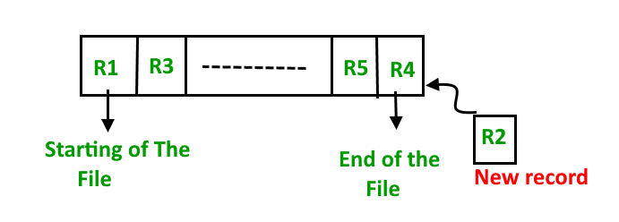
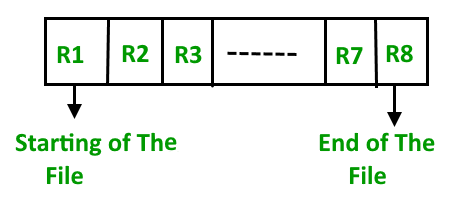

A database consist of a huge amount of data. The data is grouped within a table in RDBMS, and each table have related records. A user can see that the data is stored in form of tables, but in acutal this huge amount of data is stored in physical memory in form of files.
File – A file is named collection of related information that is recorded on secondary storage such as magnetic disks, magnetic tables and optical disks.
What is File Organization?
File Organization refers to the logical relationships among various records that constitute the file, particularly with respect to the means of identification and access to any specific record. In simple terms, Storing the files in certain order is called file Organization. File Structure refers to the format of the label and data blocks and of any logical control record.
Types of File Organizations –
Various methods have been introduced to Organize files. These particular methods have advantages and disadvantages on the basis of access or selection . Thus it is all upon the programmer to decide the best suited file Organization method according to his requirements.
Some types of File Organizations are :
- Sequential File Organization
- Heap File Organization
- Hash File Organization
- B+ Tree File Organization
- Clustered File Organization
We will be discussing each of the file Organizations in further sets of this article along with differences and advantages/ disadvantages of each file Organization methods.
Sequential File Organization –
The easiest method for file Organization is Sequential method. In this method the the file are stored one after another in a sequential manner. There are two ways to implement this method:
- Pile File Method – This method is quite simple, in which we store the records in a sequence i.e one after other in the order in which they are inserted into the tables.

Insertion of new record –
Let the R1, R3 and so on upto R5 and R4 be four records in the sequence. Here, records are nothing but a row in any table. Suppose a new record R2 has to be inserted in the sequence, then it is simply placed at the end of the file.
 - Sorted File Method –In this method, As the name itself suggest whenever a new record has to be inserted, it is always inserted in a sorted (ascending or descending) manner. Sorting of records may be based on any primary key or any other key.

Insertion of new record –
Let us assume that there is a preexisting sorted sequence of four records R1, R3, and so on upto R7 and R8. Suppose a new record R2 has to be inserted in the sequence, then it will be inserted at the end of the file and then it will sort the sequence .

Pros and Cons of Sequential File Organization –
Pros –
- Fast and efficient method for huge amount of data.
- Simple design.
- Files can be easily stored in magnetic tapes i.e cheaper storage mechanism.
Cons –
- Time wastage as we cannot jump on a particular record that is required, but we have to move in a sequential manner which takes our time.
- Sorted file method is inefficient as it takes time and space for sorting records.
Heap File Organization –
Heap File Organization works with data blocks. In this method records are inserted at the end of the file, into the data blocks. No Sorting or Ordering is required in this method. If a data block is full, the new record is stored in some other block, Here the other data block need not be the very next data block, but it can be any block in the memory. It is the responsibility of DBMS to store and manage the new records.

Insertion of new record –
Suppose we have four records in the heap R1, R5, R6, R4 and R3 and suppose a new record R2 has to be inserted in the heap then, since the last data block i.e data block 3 is full it will be inserted in any of the database selected by the DBMS, lets say data block 1.

If we want to search, delete or update data in heap file Organization the we will traverse the data from the beginning of the file till we get the requested record. Thus if the database is very huge, searching, deleting or updating the record will take a lot of time.
Pros and Cons of Heap File Organization –
Pros –
- Fetching and retrieving records is faster than sequential record but only in case of small databases.
- When there is a huge number of data needs to be loaded into the database at a time, then this method of file Organization is best suited.
Cons –
- Problem of unused memory blocks.
- Inefficient for larger databases.
Read next set : (DBMS File Organization-Set 2) | Hashing in DBMS